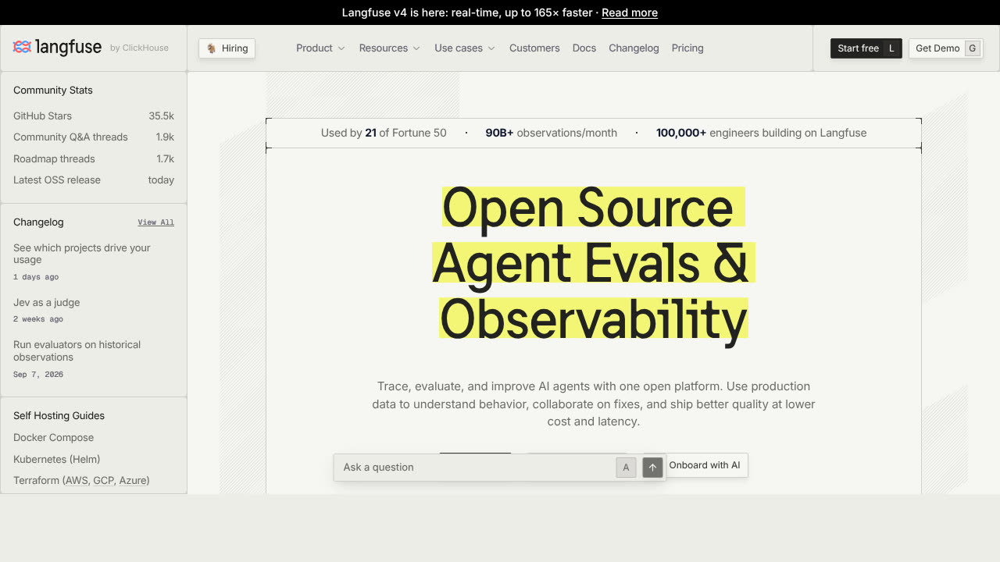

H ay un problema conocido en la evaluación de modelos de lenguaje que explica mejor que ningún consejo por qué tus pruebas caseras salen tan bien: se llama contaminación de benchmarks. Las preguntas de los exámenes públicos con los que se mide a los modelos — y a veces también sus respuestas — acaban dentro de los datos con los que se entrenan los modelos siguientes. Cuando después les pasas ese examen, no están razonando: están reconociendo un texto que ya habían visto.
La nota sube, la capacidad no. Los laboratorios lo saben y lo intentan medir: OpenAI describió para GPT-3 un filtro de solapamiento de 13 palabras seguidas entre el examen y los datos de entrenamiento, y para GPT-4 lo cambió por otro método: buscar coincidencias de fragmentos de 50 caracteres. Aun así, el método falla en cuanto alguien reformula la pregunta. La comprobación que de verdad funciona es otra, y es la que te interesa a ti: construir un examen nuevo, de dificultad parecida, y comparar. Si el modelo puntúa mucho mejor en el viejo que en el gemelo recién escrito, la diferencia es memoria, no habilidad. De ahí sale la única idea importante de esta guía, y conviene decirla antes que nada: el único examen que mide algo es el que tu sistema no ha visto nunca. Si lo has publicado, si se lo has enseñado al modelo mientras ajustabas el prompt, o si lo escribiste imaginando lo que el agente haría, ya no mide. Esta guía va de montar ese examen, pasarlo con cierta disciplina y leerlo sin engañarte.
1. Por qué la demo siempre sale bien
Cuando pruebas algo que acabas de construir, no eliges los casos al azar: eliges los que tenías en la cabeza mientras lo construías. Son los mismos que guiaron el diseño, así que el sistema está hecho a su medida. Por eso la demo sale bien — y por eso no significa nada. El examen y el temario los has escrito tú, el mismo día, con la misma idea de lo que el agente debía hacer.
Hay un segundo efecto que agrava el primero, y es el que pilla a casi todo el mundo: los fallos de un modelo no se reparten de forma uniforme. No se equivoca un 5% de las veces en cualquier pregunta. Acierta casi siempre en lo frecuente y se concentra en lo raro: la pregunta mal escrita, el documento con dos versiones, el caso que no estaba previsto, la factura con el sello encima del importe. Como esos casos son por definición los que no se te ocurrieron, son también los que no están en tu prueba. El resultado es un sistema que marca un 95% en tu hoja y falla justo en lo que justificaba montarlo.
Y hay un tercero, menos comentado: probar a mano es probar una vez. Un modelo de lenguaje no da la misma respuesta dos veces necesariamente. Si lanzas una pregunta, sale bien y pasas a la siguiente, no has medido si funciona: has medido que funcionó esa vez. La diferencia entre «funciona» y «funcionó una vez» es exactamente lo que separa una demo de un sistema en producción, y solo se ve repitiendo.
2. Antes de medir nada: escribe qué significa fallar
«Que funcione bien» no es medible, y mientras siga sin estarlo cualquier número que saques será decorativo. El paso que ahorra más tiempo es el más aburrido: escribir, en una frase por caso, qué cuenta como fallo en tu sistema concreto. No fallo en abstracto — fallo aquí.
La clave es que no todos los fallos valen lo mismo, y tratarlos igual te lleva a optimizar lo que no importa. Un asistente que dice «no lo sé» cuando sí había respuesta te molesta. Ese mismo asistente inventando una política de devoluciones delante de un cliente te puede costar una reclamación. Los dos son «un fallo» y cuentan igual en un porcentaje de aciertos, pero uno cuesta cien veces más que el otro. Antes de contar nada, sepáralos en dos categorías y acepta la asimetría: casi siempre vas a querer un sistema que se calle de más antes que uno que rellene de menos.
Para un agente que además actúa — envía correos, modifica una hoja, llama a una API — la lista tiene una categoría propia que no existe en un chat: las acciones irreversibles. Ahí el fallo no es «respondió mal», es «hizo algo que no se puede deshacer». Conviene escribirlas aparte y por su nombre: envió un correo a un cliente, borró una fila, hizo un pago, publicó algo. Si tu sistema puede hacer alguna de ellas, esa lista es la parte más importante de tu evaluación, aunque sean cinco casos de cincuenta.
3. El conjunto de casos: 30 reales valen más que 1.000 inventados
A esto se le llama conjunto de evaluación, y es sencillamente una lista de entradas con el resultado que esperas de cada una. No necesitas miles. Con 30 o 50 casos bien elegidos ya ves casi todo lo que vas a ver; lo que decide la calidad no es el tamaño, es de dónde salen.
Sácalos de lo que ya ha pasado, no de tu imaginación. Correos reales que recibiste, tickets antiguos, documentos que de verdad circulan por tu negocio, las preguntas que la gente hace por teléfono. Si todavía no tienes historial, el sustituto menos malo es pedirle a otra persona del equipo que escriba los casos sin mirar cómo has montado el agente. La contaminación que te importa a esta escala no es la del entrenamiento del modelo: es que el examen lo escriba quien hizo el temario.
Mete a propósito lo que sabes que va mal. Un conjunto compuesto solo de casos normales no sirve. Hace falta, con nombres y apellidos: entradas ambiguas, documentos mal escaneados, preguntas cuya respuesta no está en ninguna parte (para comprobar que dice que no lo sabe), casos con dos respuestas posibles, textos en otro idioma si te pueden llegar, y entradas que intentan colar instrucciones al agente — eso último es prompt injection, y si tu agente lee contenido que no has escrito tú, debe estar en tu examen.
Congélalo y guárdalo aparte. En cuanto empieces a ajustar el prompt mirando los fallos, el conjunto se gasta: estarás afinando el sistema contra esos casos concretos, que es la versión doméstica de la contaminación del principio. La solución estándar es partirlo en dos desde el primer día: un grupo que usas para corregir y otro que no tocas y solo pasas al final. Si solo vas a mantener uno, que sea el segundo.

Para empezar no necesitas ninguna herramienta: una hoja de cálculo con tres columnas — entrada, respuesta esperada, respuesta obtenida — hace el trabajo y tiene la ventaja de que la entiende todo el equipo. Las plataformas de la captura (promptfoo, Langfuse y similares, varias con versión de código abierto) resuelven lo que la hoja no: repetir cada caso varias veces, guardar el histórico y avisarte cuando algo que funcionaba deja de funcionar. Merecen la pena cuando ya tienes un conjunto de casos que vale algo. Antes, no: la herramienta no sustituye al examen, solo lo corrige más rápido.
4. Qué medir, según lo que hayas montado
No hay una métrica buena para todo. Lo que se mide depende de la forma de la salida, y la mayoría de sistemas caen en uno de estos cuatro cajones.
Extracción de datos — facturas, formularios, documentos. Es el caso fácil y el que más gente mide mal: no puntúes el documento entero como acierto o fallo, puntúa campo a campo. Un albarán con nueve campos bien y el importe mal no es «90% correcto», es un albarán inservible. Mide cada campo por separado y vigila especialmente los numéricos y las fechas. Lo desarrollamos en la guía de analizar imágenes y PDFs con IA.
Preguntas sobre tus documentos — el caso de un bot de soporte o un buscador interno. Aquí la métrica útil no es si la respuesta «suena bien», sino tres comprobaciones separadas: si la fuente recuperada era la correcta, si lo que afirma la respuesta está efectivamente en esa fuente, y si dijo «no lo sé» cuando la respuesta no estaba. La tercera es la que casi nadie mide y la que más disgustos ahorra: si tu conjunto no incluye preguntas sin respuesta posible, no estás midiendo nada de eso. Está desarrollado en cómo montar un bot que no invente y en grounding.
Clasificar o decidir — ordenar correos, marcar prioridades, decidir si algo pasa a revisión. Es el cajón donde el porcentaje de aciertos engaña más. Si el 95% de tus correos no son urgentes, un sistema que conteste «no urgente» siempre acierta el 95%: parece bueno y no sirve para nada. Lo que hay que mirar son los dos errores por separado — cuántos urgentes se le escapan y cuántos no urgentes marca como urgentes — porque casi nunca cuestan lo mismo.
Agentes que ejecutan pasos — el caso más difícil de medir, porque no hay una respuesta correcta única: hay varios caminos válidos. Medir el texto final no te dice si el camino fue razonable. Lo que funciona es puntuar tres cosas distintas: si llegó al resultado, cuántos pasos necesitó (un agente que acierta en treinta llamadas te va a costar dinero y tiempo) y, sobre todo, si hizo alguna de las acciones irreversibles de tu lista sin que tocara. Si has repartido el trabajo entre varios agentes, mide también cada uno por separado: cuando falla el conjunto, el porcentaje global no te dice cuál de ellos lo rompió — lo comentamos en varios agentes o uno solo.
5. Usar una IA para corregir a otra: cuándo vale y cuándo te engaña
Corregir cincuenta respuestas largas a mano cansa, y la salida evidente es pedirle a un modelo que puntúe las respuestas de otro. Se le llama LLM-as-a-judge y funciona razonablemente para algunas cosas, pero tiene sesgos documentados que conviene conocer antes de fiarte de un número que ha salido de ahí. Hay literatura abundante midiéndolos, y los tres principales son estos.
Sesgo de posición. Cuando le pides que compare dos respuestas, tiende a favorecer a la que ve primero. Varios trabajos lo han comprobado de la forma más simple posible: cambiando el orden de las dos candidatas, el veredicto cambia. Sesgo de verbosidad. Prefiere la respuesta más larga y detallada aunque diga lo mismo; se mide poniéndole delante una versión más palabrera pero equivalente y viendo que la puntúa mejor. Sesgo de autopreferencia. Un modelo tiende a puntuar mejor su propio texto que el de otros. La explicación que se le da en la investigación no es vanidad: los modelos puntúan más alto los textos que les resultan más predecibles, y el suyo propio lo es por construcción.
Nada de esto lo invalida; lo acota. Cuatro medidas lo dejan utilizable. Pásale cada comparación dos veces con el orden invertido y quédate solo con los casos en que el veredicto coincide. No uses como juez al mismo modelo que generó la respuesta. Pregúntale cosas comprobables y cerradas («¿esta afirmación aparece en este documento, sí o no?») en vez de pedirle una nota del 1 al 10, que es donde los sesgos tienen sitio para actuar. Y corrige tú a mano una muestra de veinte casos para ver si el juez coincide contigo: si no coincide, el problema no está en el agente, está en el corrector.
La regla práctica: un modelo juez vale para vigilar tendencias y para filtrar mucho volumen, no para decidir si algo se publica. Para lo que de verdad importa — las acciones irreversibles, los casos límite de tu lista — se corrige a mano. Son pocos, por eso los escribiste aparte.
6. La prueba de regresión: el paso que casi nadie da
Casi todo el mundo que evalúa un agente lo hace una vez, el día que lo monta. Y la evaluación de un solo día tiene un valor limitado, porque lo que mide caduca. Hay tres cosas que cambian debajo de tus pies.
La primera eres tú: cada vez que retocas una instrucción para arreglar un caso, puedes romper otro que ya funcionaba. Es el fallo más frecuente y el más invisible, porque nadie vuelve a probar lo que ya daba por bueno. La segunda son tus documentos: si el agente responde a partir de una base que alguien actualiza, la misma pregunta puede empezar a dar otra respuesta sin que hayas tocado nada. Y la tercera es el modelo. Las versiones se actualizan, los proveedores retiran las antiguas y el comportamiento cambia — a veces a mejor, y aun así cambia. Basta mirar el ritmo de lanzamientos y retiradas de los últimos meses para ver que esto no es una hipótesis.
La respuesta a las tres es la misma y es sencilla: el conjunto de casos se vuelve a pasar entero cada vez que cambia algo, y se guarda el resultado con la fecha y la versión del modelo. Eso es una prueba de regresión, y el nombre importa poco; lo que importa es que compares con la vez anterior en vez de mirar el número de hoy a solas. Un 88% no significa nada. Un 88% cuando la semana pasada era un 94% y lo único que has tocado es una frase del prompt te está diciendo exactamente dónde mirar.
7. Lo que no cabe en el porcentaje
Un sistema puede acertar mucho y aun así no servir. Hay cuatro cosas que no salen en la tasa de aciertos y deciden igual si esto se queda o se apaga.
Lo que cuesta. Mide el coste por caso resuelto, no por llamada. Un agente que acierta más porque hace diez consultas en vez de dos puede salirte peor que uno algo menos preciso. Tenemos una calculadora de coste de API para hacer esa cuenta. Lo que tarda. Mira el caso lento, no la media: si uno de cada veinte tarda cuarenta segundos, eso es lo que va a definir la experiencia de quien lo use, no el promedio. Cuántas veces acaba en una persona. No es un fracaso — en muchos diseños es el comportamiento correcto — pero es el número que convierte la evaluación en horas de trabajo reales. Y si alguien lo usa. Un asistente interno con una precisión excelente que el equipo ha dejado de abrir tiene una tasa de acierto perfecta y un valor de cero.
8. Y cuando ya está en producción
El conjunto de casos te dice cómo se porta con lo que previste. Producción te enseña lo que no previste, y hay tres señales baratas que no exigen leerse nada entero.
La primera son las correcciones que te regala el usuario: cuando alguien repite la pregunta, la reformula o escribe «eso no es correcto», te está marcando un fallo gratis. Recoger esas conversaciones es la fuente de casos nuevos más barata que vas a encontrar, y además son casos reales por definición. La segunda son las respuestas sin fuente: si tu sistema debe citar un documento, las respuestas que no citan ninguno son sospechosas sin necesidad de leerlas. La tercera es la deriva silenciosa: vigila la proporción de «no lo sé» y la longitud media de las respuestas. Si cualquiera de las dos se mueve de golpe sin que hayas tocado nada, algo ha cambiado por debajo — casi siempre el modelo o los documentos.
Leer transcripciones al azar, que es lo que casi todo el mundo hace, es el método menos eficaz de los cuatro. Las respuestas inventadas se leen igual de bien que las correctas: por eso hay que buscarlas por señales indirectas y no por lectura.
9. Cuándo no hace falta nada de esto
Montar una evaluación cuesta tiempo, y no siempre compensa. Si eres tú solo usando un chat para redactar borradores que revisas antes de enviar, no necesitas un conjunto de casos: tú eres la evaluación, caso por caso, y el error se queda en tu pantalla. La pregunta que decide es quién ve la salida antes que una persona.
En cuanto la respuesta llega a un cliente sin que nadie la lea, o el agente hace algo por su cuenta, o lo va a usar un equipo entero y no solo quien lo montó, la cuenta cambia: treinta casos bien elegidos son más baratos que una reclamación. Y si no estás en ninguno de esos supuestos, el consejo honesto es el contrario al que esperarías de una guía sobre evaluar: no montes el aparato de medición todavía. Guarda los casos raros según te vayan apareciendo, en una hoja, sin más ceremonia. Cuando llegue el momento de evaluar en serio, ese archivo será lo más valioso que tengas — y es justo lo que nadie tiene cuando le hace falta.
Un ejemplo con números: por qué el porcentaje engaña
Un clasificador de correos urgentes ante 200 mensajes, de los cuales 10 son urgentes de verdad. El sistema marca 20 como urgentes: acierta 8 y falla 12 (no urgentes marcados como urgentes). Se le escapan 2 urgentes.
| Medida | Cálculo | Resultado |
|---|---|---|
| Aciertos globales | (8 urgentes bien + 178 no urgentes bien) / 200 | 93 % |
| Urgentes detectados | 8 de 10 | 80 % |
| Avisos de urgente que eran ciertos | 8 de 20 | 40 % |
Un 93 % suena bien, pero deja pasar 2 de cada 10 urgentes y hace perder el tiempo con 12 falsas alarmas. Un sistema que respondiera siempre «no urgente» tendría un 95 % de aciertos globales y detectaría cero urgentes. Por eso la guía insiste en medir los dos errores por separado. Los números del ejemplo son ilustrativos, no de un sistema real.
Hoja mínima para empezar: una fila por caso y estas columnas.
| Columna | Para qué sirve |
|---|---|
| Id y fuente del caso | Saber si es real o inventado, y de qué fecha |
| Entrada | Exactamente lo que recibe el agente |
| Resultado esperado | Escrito por alguien que no ajustó el prompt |
| Categoría de fallo si falla | Molesta / cuesta dinero / acción irreversible |
| Resultado obtenido (3 pasadas) | Ver si es estable, no solo si acertó una vez |
| Versión del modelo y fecha | Poder comparar contra la vez anterior |
Qué ha cambiado en 2026
Tres novedades de este otoño que afectan a cómo evalúas:
- Las puntuaciones de agentes las publican sus fabricantes. Anthropic indica para Claude Sonnet 5.5 un 80,1 % en OSWorld 2.1, en su versión parcial (frente a 57,0 % de Sonnet 5), una prueba de manejo de ordenador (anuncio de Anthropic; contexto en nuestra noticia). Son cifras del fabricante en su prueba; que mejore en esa tabla no garantiza que mejore con tus documentos. Cómo leer estas tablas: guía de benchmarks y agentes que usan el ordenador.
- Los modelos se retiran con fecha. OpenAI ha publicado que apagará varias versiones de GPT-4o y GPT-4.1 el 14 de enero de 2027 (página de deprecaciones). Es la razón de peso para tener una prueba de regresión lista: cuando cambies de versión, pasa el conjunto entero. El calendario de retiradas de cada proveedor y el orden en que conviene hacer el cambio, en cómo migrar de modelo sin romper lo que funciona.
- Los agentes pueden coordinar a otros agentes. Si montas algo así (por ejemplo, con los flujos dinámicos en beta de Claude Managed Agents), el resultado final no te dice qué subagente falló: puntúa y registra cada uno. Más en la noticia.
Reglas de decisión: cuándo pasa de prueba a producción
Reglas que usamos antes de dar luz verde, escritas para que las adaptes. Son criterios editoriales nuestros, no un estándar:
- Cero acciones irreversibles incorrectas en el conjunto congelado. Si hay una, no se despliega, sin importar el porcentaje.
- Todos los casos sin respuesta posible acaban en "no lo sé" o en traspaso a una persona.
- Ningún tipo de caso (por ejemplo, documentos escaneados) por debajo del mínimo que hayas fijado antes de mirar los resultados.
- Tres pasadas por caso con el mismo resultado en la inmensa mayoría; si el resultado cambia entre pasadas, trátalo como fallo hasta entenderlo.
- Una semana de supervisión humana completa tras el lanzamiento, con la prueba de regresión programada.
Fija los umbrales antes de ver los resultados; si los pones después, estarás justificando lo que ya sale.